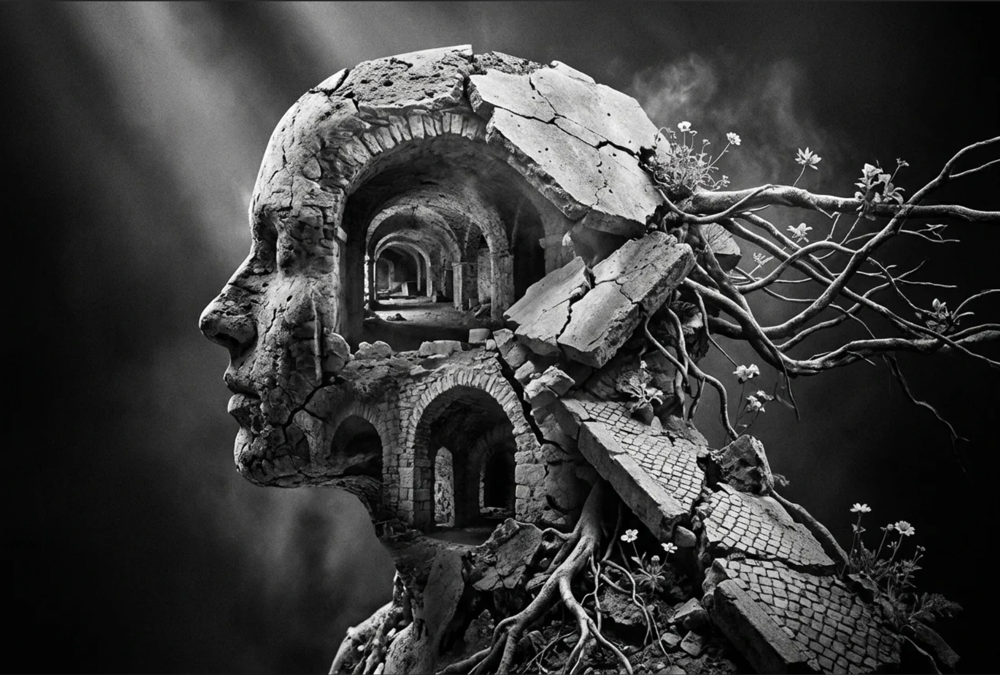

Matéria Viva

É nos momentos de pausa que tudo emerge.
Aqueles escassos minutos revelam algo esquecido, algo que ficou algures nas catacumbas da memória, escondido sob calhaus misturados com betão.
E tu, que me tomaste de assalto, rachaste-me o betão e abriste as brechas das catacumbas.
E agora?
Agora vem tudo ao de cima, de forma caótica e sem manual de procedimentos. Algo que, no meu íntimo, já antecipava mas teimava em não explorar. Talvez por medo. Ou antes por autopreservação. Cansaço, é isso. Afinal, já muito tinha sido escavado e explorado, deixando a descoberto toda uma série de artefactos que fossilizaram na passagem do tempo.
Mas este algo não está fossilizado. É matéria viva. Fede. Mexe-se. Revolve-se contra a minha vontade.
Move-se e explora os cantos da minha consciência com uma arrogância irónica, reivindicando num instante a vingança de décadas de confinamento.
Floresce. Expande-se como raízes que levantam a calçada.
E eu assisto, tranquilo, impotente.
Não é derrota que sinto. É entrega. É uma submissão voluntária, a concessão ao seu direito de existir.
Rachaste-me o betão e desapareceste da mesma forma que surgiste.
E agora?
O resto é comigo.
← Voltar a Livros & Ensaios